第三组：身体自动点置信度加权
cam3 19.416 s / cam4 19.407 s · 2026-10-11
保留原始完整流程、0.3 筛选阈值和 1600 次第二阶段优化。唯一算法改动：将该阶段入选点的等权残差改为按置信度平方加权，并除以总权重。后续算法、模型权重、自动点与相机标定不变；没有人工标注和单帧调参。本实验未沿用“跳过第二阶段”。
原流程及邻帧 · 此前跳过第二阶段对照 · 离线分享版 · 完整报告 · 逐阶段 CSV · 完整数据
结论：存在局部指标收益，但没有解决外扩，不替换默认流程。- 两张图的身体阶段及最终融合都仍有明显外扩。仅改变自动点权重没有解决该几何问题。
- cam3 的最终身体 RMSE 从 9.04 增至 9.75 px，手部 RMSE 从 9.39 降至 8.97 px。上方网格分布发生变化，但仍覆盖手部附近并向右外扩，不能视作整体修复。
- cam4 的最终身体 RMSE 从 16.62 降至 14.18 px，但最终左侧外扩更明显；手部 RMSE 从 9.28 增至 9.69 px，左侧局部交叉由 0 增至 5 对。更低的身体点误差仍不等于更合理的网格。
- 保留原流程作为默认。新版本仅作为可回退的对照实验，不据这两张图推广到其余帧。
左：原等权流程；右：仅第二阶段按置信度加权。RMSE 相对自动点，不是人工真值。
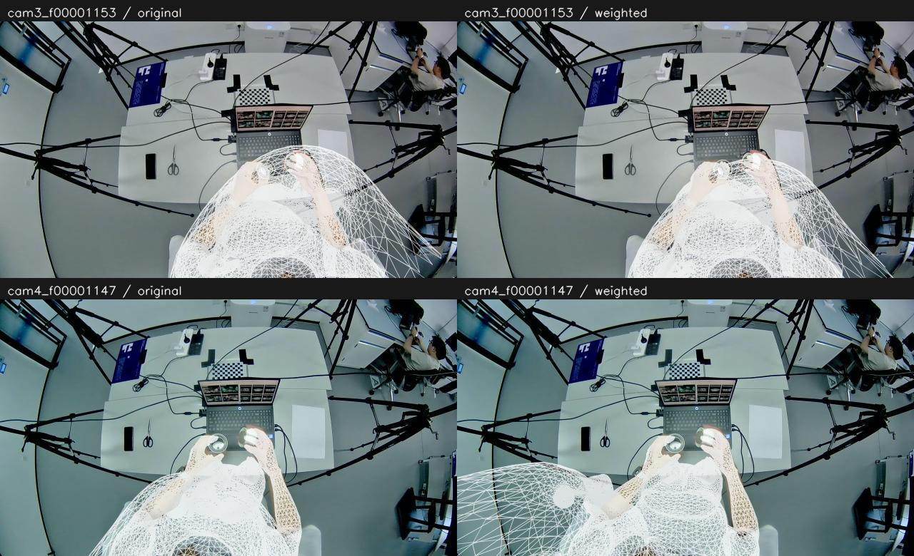
全部阶段汇总图
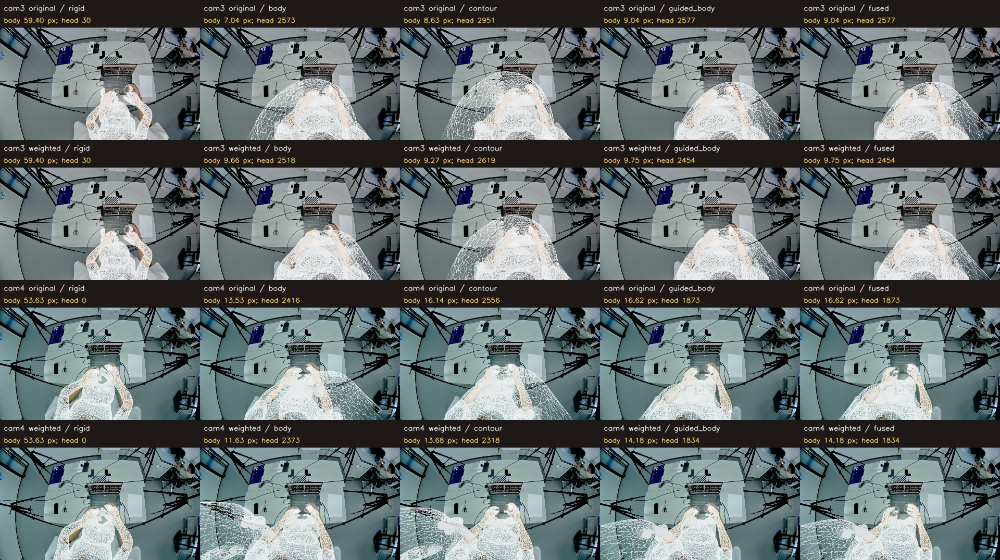
cam3 · 19.416 s
展开全部阶段：左原等权，右置信度加权
EgoSMPLX 初始预测
 原流程：等权 · 身体 211.52 px · 入图头部顶点 0
原流程：等权 · 身体 211.52 px · 入图头部顶点 0
 第二阶段：置信度平方加权 · 身体 211.52 px · 入图头部顶点 0
第二阶段：置信度平方加权 · 身体 211.52 px · 入图头部顶点 0
整体旋转和平移校正
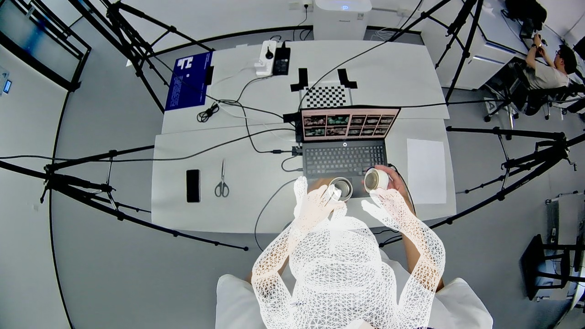
原流程：等权 · 身体 59.40 px · 入图头部顶点 30
 第二阶段：置信度平方加权 · 身体 59.40 px · 入图头部顶点 30
第二阶段：置信度平方加权 · 身体 59.40 px · 入图头部顶点 30
第二阶段身体姿态优化
后续腕点校正
 原流程：等权 · 身体 8.21 px · 入图头部顶点 2797
原流程：等权 · 身体 8.21 px · 入图头部顶点 2797
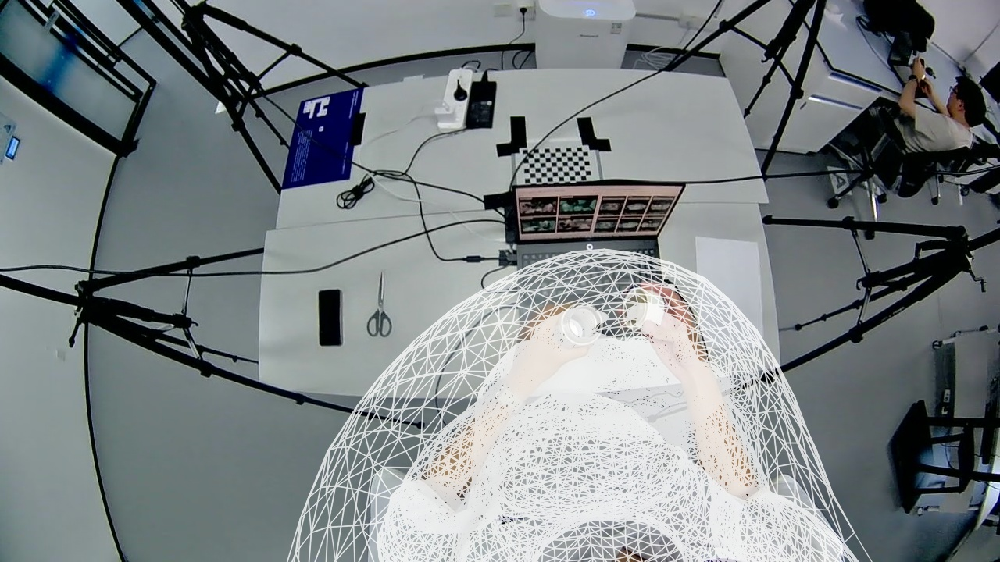
第二阶段：置信度平方加权 · 身体 9.06 px · 入图头部顶点 2608
轮廓候选选定身体
 原流程：等权 · 身体 8.63 px · 入图头部顶点 2951
原流程：等权 · 身体 8.63 px · 入图头部顶点 2951
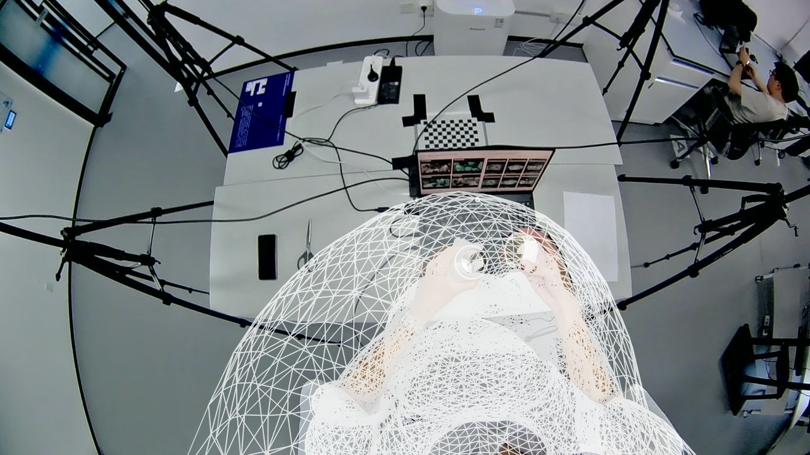
第二阶段：置信度平方加权 · 身体 9.27 px · 入图头部顶点 2619
MANO 辅助身体
最终原接缝融合
原流程：等权 · 身体 9.04 px · 入图头部顶点 2577
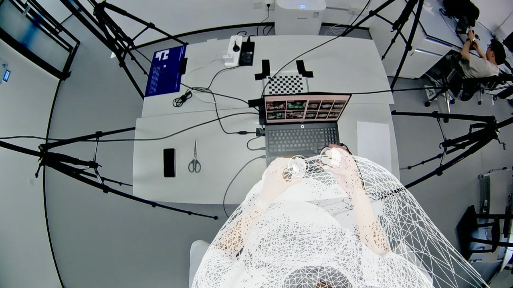
第二阶段：置信度平方加权 · 身体 9.75 px · 入图头部顶点 2454
left 手腕相同区域放大
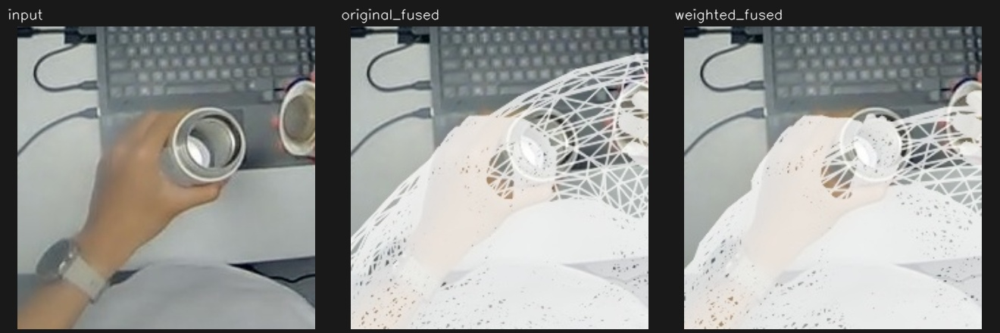
right 手腕相同区域放大
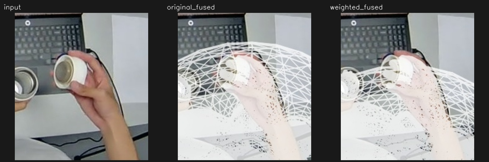
每个身体点的权重和第二阶段残差
两个版本使用完全相同的自动目标；这里只改变目标在第二阶段优化中的相对影响。
cam4 · 19.407 s
展开全部阶段：左原等权，右置信度加权
EgoSMPLX 初始预测
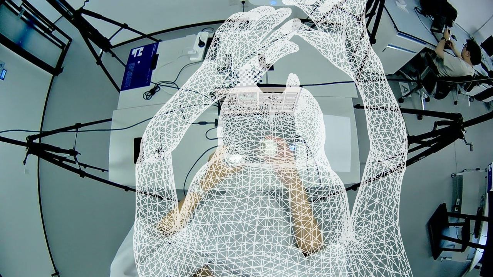
原流程：等权 · 身体 244.72 px · 入图头部顶点 0
 第二阶段：置信度平方加权 · 身体 244.72 px · 入图头部顶点 0
第二阶段：置信度平方加权 · 身体 244.72 px · 入图头部顶点 0
整体旋转和平移校正
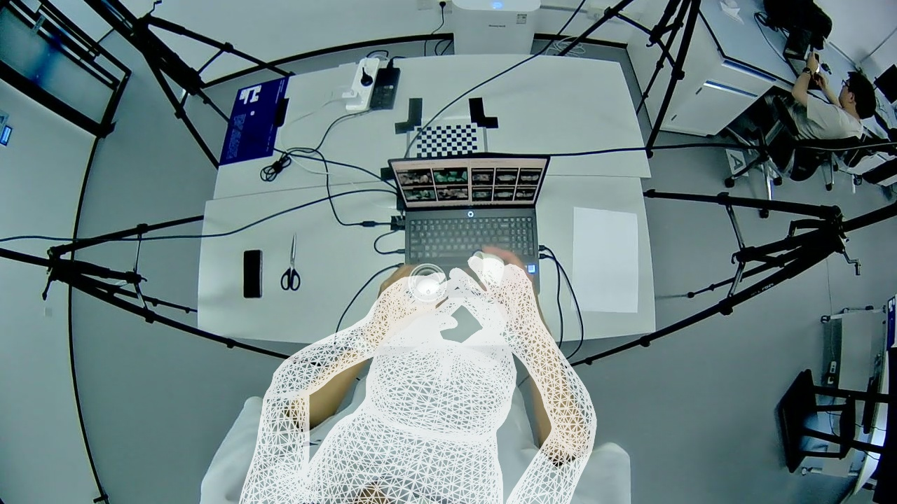
原流程：等权 · 身体 53.63 px · 入图头部顶点 0
 第二阶段：置信度平方加权 · 身体 53.63 px · 入图头部顶点 0
第二阶段：置信度平方加权 · 身体 53.63 px · 入图头部顶点 0
第二阶段身体姿态优化
 原流程：等权 · 身体 13.53 px · 入图头部顶点 2416
原流程：等权 · 身体 13.53 px · 入图头部顶点 2416
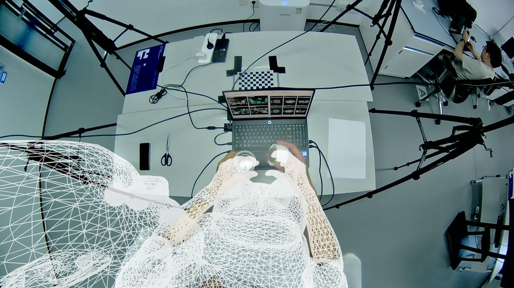
第二阶段：置信度平方加权 · 身体 11.63 px · 入图头部顶点 2373
后续腕点校正
 原流程：等权 · 身体 15.01 px · 入图头部顶点 2592
原流程：等权 · 身体 15.01 px · 入图头部顶点 2592
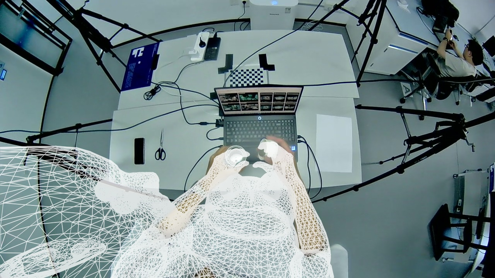
第二阶段：置信度平方加权 · 身体 13.37 px · 入图头部顶点 2346
轮廓候选选定身体
 原流程：等权 · 身体 16.14 px · 入图头部顶点 2556
第二阶段：置信度平方加权 · 身体 13.68 px · 入图头部顶点 2318
原流程：等权 · 身体 16.14 px · 入图头部顶点 2556
第二阶段：置信度平方加权 · 身体 13.68 px · 入图头部顶点 2318
MANO 辅助身体
最终原接缝融合
left 手腕相同区域放大
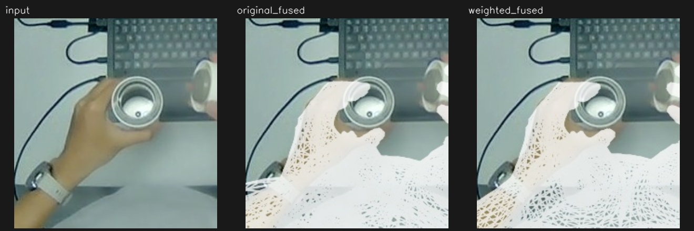
right 手腕相同区域放大
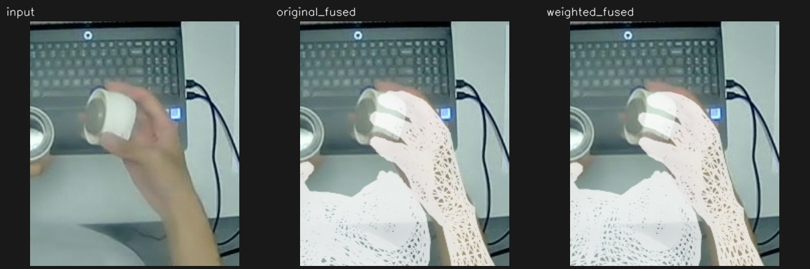
每个身体点的权重和第二阶段残差
两个版本使用完全相同的自动目标；这里只改变目标在第二阶段优化中的相对影响。
两个新结果重载均通过，但局部交叉均未通过。头部入图数量不代表可见面积或整体准确度，未进行遮挡消隐。
回退 checkpoint：54a37980a838f605af4b4766871e7b1ae102f624；实验提交：f133a03776992c03db8485d35c43f14c82a5cc59。代码差异 · 权重及输入核验。默认流程和旧结果保留。